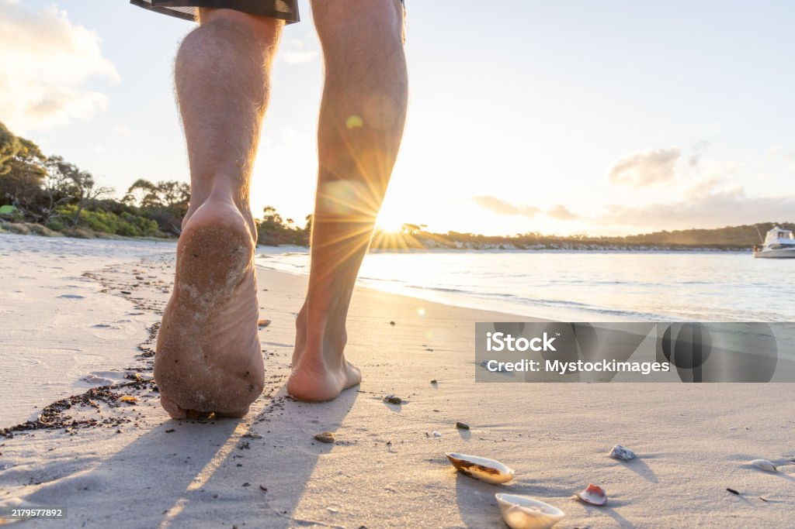
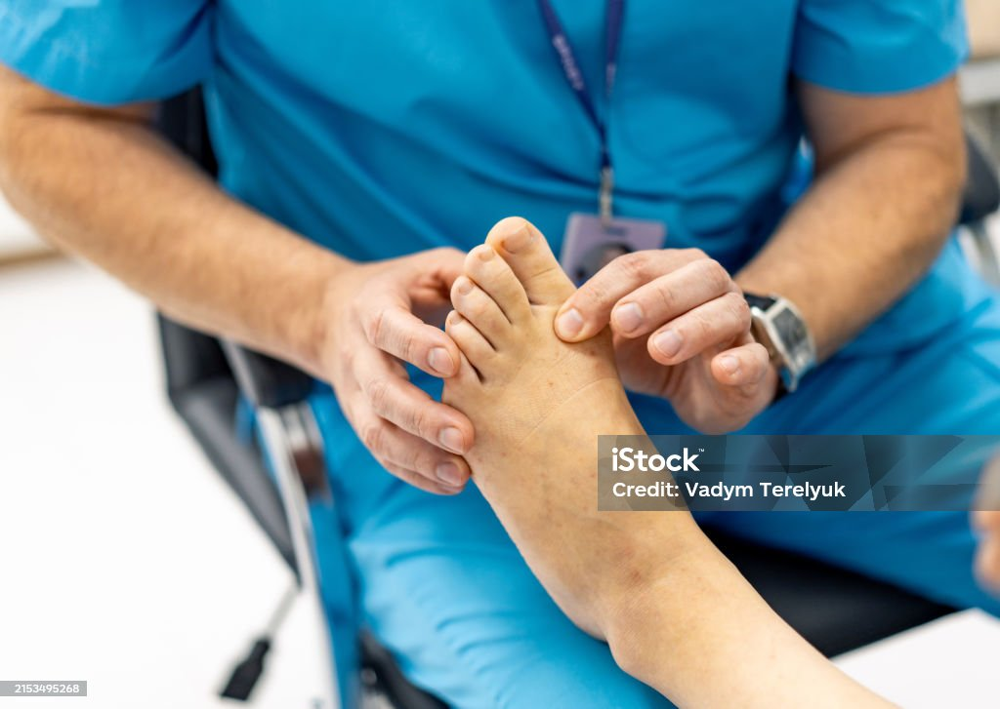
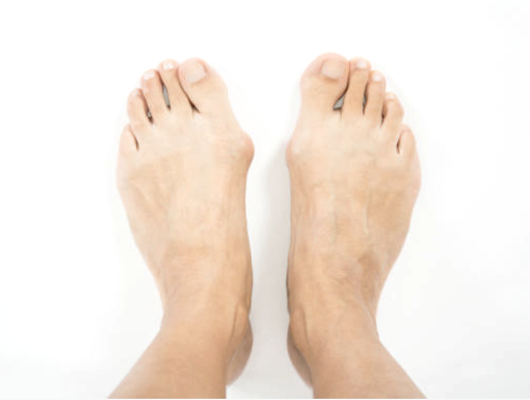
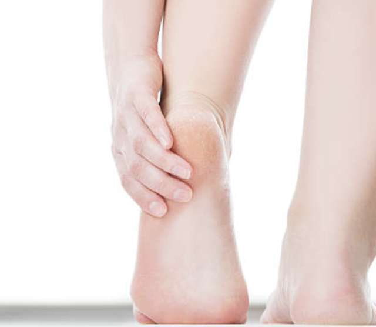
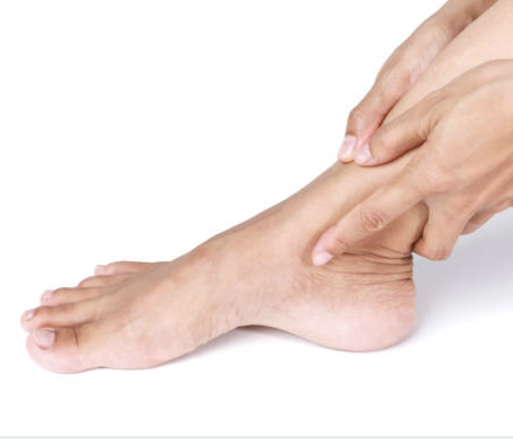
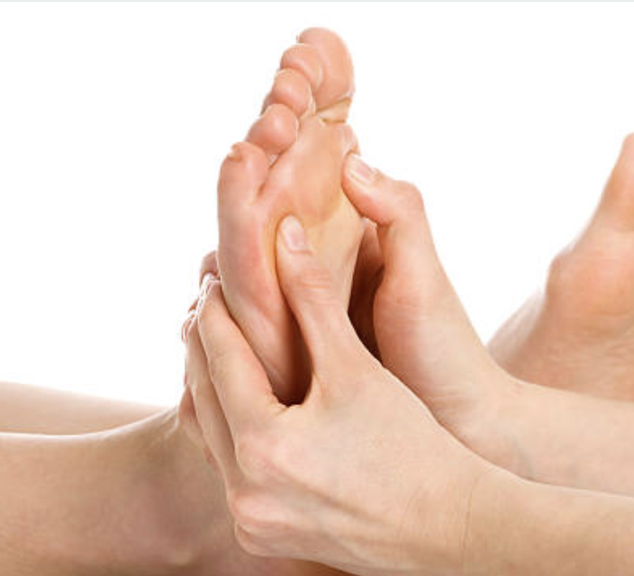
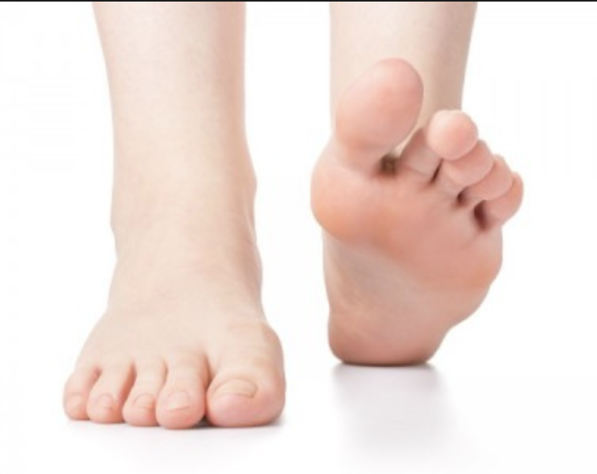
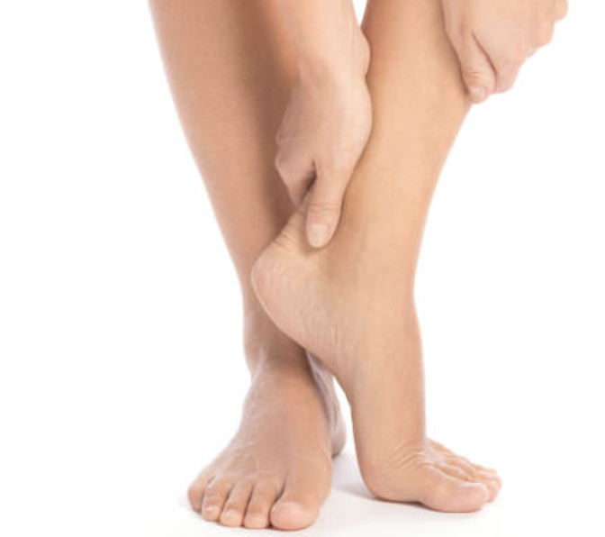
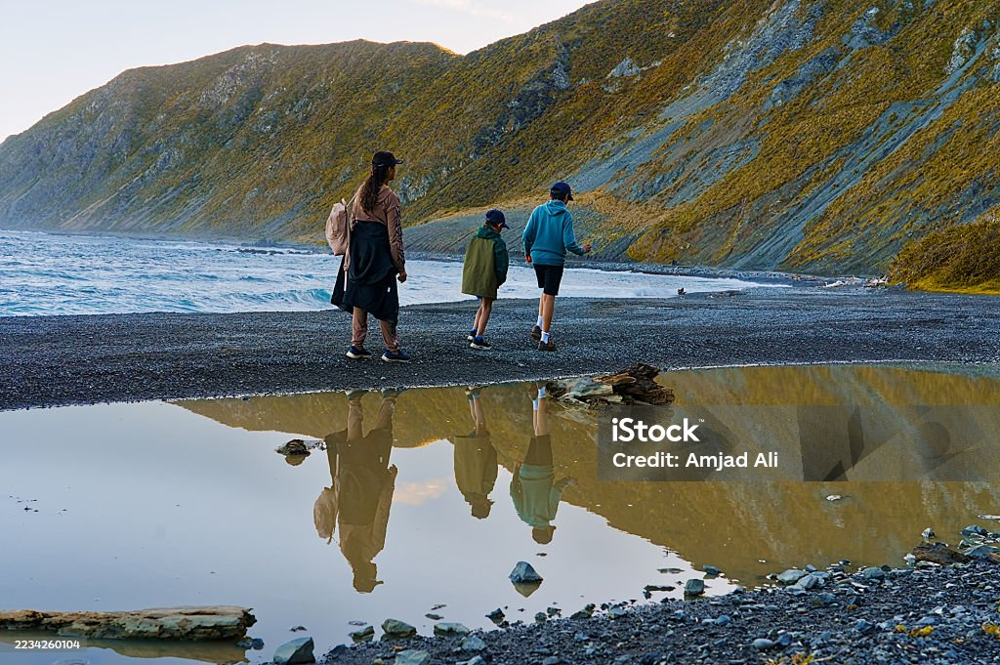
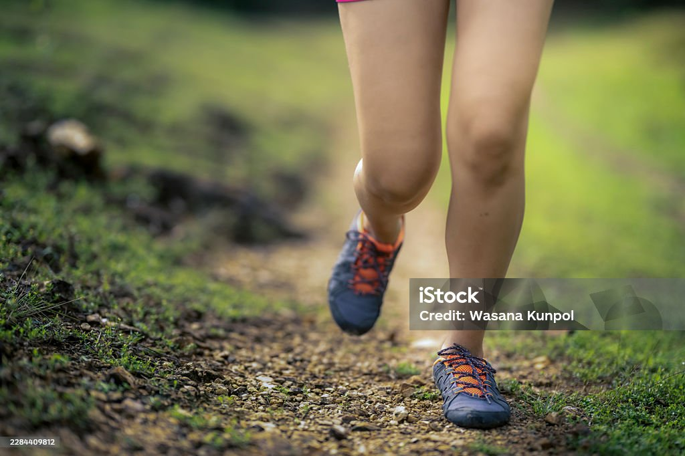

Heel pain, bunions, hammer toes, sore knees, or shoes you can’t wear anymore? Our gentle, hands‑on therapy corrects the joints causing the problem, so you can walk and run in comfort again. No orthotics. No surgery.


Foot Mobilisation Therapy (FMT) is a hands‑on technique that gently restores movement to stiff, misaligned or dysfunctional joints, encouraging the foot back through its natural range of motion.
A quick look at how our approach differs from traditional podiatry.
Foot problems ripple through the whole body. If any of these sound familiar, we can help.


Plantar fasciitis and heel spurs, treated at the joint restrictions that cause them.
Learn more →



When the foot isn’t working, the ankle and knee pay for it. We fix the foundation.
Learn more →Every plan starts with a thorough assessment, so you know exactly what’s going on and what to expect, before any treatment begins.
A detailed hands‑on assessment of every joint in your foot and ankle, plus how you stand, walk and move. You’ll see objective measurements, not guesswork.
Gentle, targeted mobilisation of the restricted joints. Most people describe it as a firm, comfortable stretch. No needles, no cutting, no bulky insoles.
Simple exercises from your client portal keep the correction and build strength, so your feet hold their new alignment for the long term.

We believe quality of life means being able to move freely. Whether it’s a toddler’s in‑toeing, a teenager’s growing pains, a runner’s niggle or a grandparent’s bunion, the approach is the same: gentle, measurable and built to last.
I’d been told surgery was my only option for my bunion. After a few months of FMT I’m hiking again and back in my normal shoes.
Years of heel pain gone. I’d tried three sets of orthotics. This was the first thing that actually fixed the problem rather than padding it.
Gentle enough for my 9‑year‑old, who now runs without complaining about his feet. Shaun explains everything so clearly.
Restricted foot joints change the way you load every stride. We work with runners, trail athletes, netballers and weekend warriors across the Bay of Plenty to restore efficient movement, treat niggles before they become injuries, and keep training on track.

Book online in under a minute, or send us an enquiry and we’ll call you back to talk through your options.